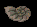

Chapter 6
[ELVANDAR SECTOR]
 [ZONE 8 MAP]
[ZONE 8 MAP]
 [CHAPTER 6]
[CHAPTER 6]
[ELVANDAR SECTOR]
 [ZONE 8 MAP]
[ZONE 8 MAP]
 [CHAPTER 6]
[CHAPTER 6]
The Ruins can not be entered unless you've talked to Prince
Calin, and received a Key of Lineages from him. Even if you already have such a
Key, it is of no use unless you've talked to Calin, and 2 points will be
subtracted from your Strength every time you try entering. If, however, you HAVE talked
to the Prince, 6 points will be added to your Strength when you enter.
The Northern Exit leads to Elvandar, and the end of Chapter 6. This is not the only way
to enter Elvandar, so strictly you don't NEED to go here in order to finish the game.
However, here you will find the Hilt of the Guarda Revanche, the most powerful Sword in the
game. Unfortunately this Sword is BUGGED. Read all about it.
CACHES
"...and so came I unto the Abbey of Killian which stood
unto the western fringe of the forest of the Eledhel, so
named Elvandar, and there was shown a fairy chest upon
whose face were the runes which are common unto the elven
and moredhel kin. A certain father then did turn the strange
cylinders which were on the face of the chest, forming a
word unfamiliar with me, GLAMREDHEL, but one which
threw open the latches which bound closed the lid of the
box. From within he brought a finely jeweled hilt which he
called the Gaeda. This father then told me it had come from
a ruin of an ancient place and since, there was much
misfortune come unto their abbey and they willed it should
be returned there for its eternal rest. He also did tell me
other things strange and wondrous of the legend, saying a
spell had been bound into a shell that would repair the
blade which had long been broke away, describing this shell
as one marked with an uneven surface of ten misformed
lumps ...."
You will find the Hilt in
the GLAMREDHEL Chest.
 Eliaem will give you the
Shell, if you solve her Quest.
Unfortunately the Guarda is bugged. It is powerful, and any enhancements
applied to it will stay there forever, but it is seriously bugged. Here's
how:
Version 1.01 - Guarda with Bless #3. The Blessing makes the Guarda *TOO*
strong for BAK's mathematics! Some enemies will suffer *negative* Damage,
i.e. they will *GAIN* Health/Stamina Points instead of losing them! This
means that Gorath can go on & on whacking the Enemies, and they just get
stronger with each whack! [Solution: If you run into such an Enemy, keep
Gorath away from him - Owyn should be able to handle this.]
Version 1.02 - Guarda (NO Blessing). This is obviously the programmers'
pathetic attempt at fixing the bug. And it's useless, because you can easily
go and get the Guarda Blessed in a Temple anyway!
ADVICE: In Version 1.02 DO NOT get a Blessing for the Guarda.
 GLAMREDHEL CHEST (7/11)
GLAMREDHEL CHEST (7/11)
 [Version 1.01]
[Version 1.01]
 [Version 1.02]
[Version 1.02]

 EQUALS Chest (6/10) [Version 1.01]
EQUALS Chest (6/10) [Version 1.01]
 EQUALS Chest (7/11) [Version 1.02]
EQUALS Chest (7/11) [Version 1.02]

 LIFE Chest (4/8)
LIFE Chest (4/8)

 Trapped Chest (8/12)
Trapped Chest (8/12)
 Skill > 55
- Damage: 175
Skill > 55
- Damage: 175

 Grave (1/1)
Grave (1/1)

 Body (2/4)
Body (2/4)


 North: DOOR (Locked)
North: DOOR (Locked)
 KEY OF LINEAGES
KEY OF LINEAGES South: DOOR (Locked)
South: DOOR (Locked)
 Skill > 60 or Guilder's Passkey
Skill > 60 or Guilder's Passkey

ELVANDAR
 The North Exit of the Ruins leads to Elvandar, so don't exit unless you're
sure you've done all you want to in Chapter 6. Do you have the Guarda Revanche?
Have you found the FIRESTORM Spell? Or MAD GOD'S RAGE? TOUCH OF LIMS-KRAGMA? Are
you well stocked with basic necessities like Rations, Rope, Restoratives, etc.?
You'd better be, because Gorath and Owyn are going to a place where such luxuries
are not easy to come by!
The North Exit of the Ruins leads to Elvandar, so don't exit unless you're
sure you've done all you want to in Chapter 6. Do you have the Guarda Revanche?
Have you found the FIRESTORM Spell? Or MAD GOD'S RAGE? TOUCH OF LIMS-KRAGMA? Are
you well stocked with basic necessities like Rations, Rope, Restoratives, etc.?
You'd better be, because Gorath and Owyn are going to a place where such luxuries
are not easy to come by!

GUARDA REVANCHE
The Guarda Revanche is the most powerful Sword in the game, and not easy to
obtain. If you've read the ABBOT'S JOURNAL (found in Cavall Run), you should
have lots of clues:
COMBATS
This is a rough table of all Enemies in the Zone C5 Sector. For more
detailed information click on the Combat Number in the map above, or in the
table below.
| Combat # 01 ( Valheru Ruins North Exit ) |
Zone
C5
|
|||||||||||
| SH | 001 | 0205 | 00 | 39 | 30 | 05 | 20 | 40 | 30 | 00 | 00 | EAR88 KIN61 |
| SH | 002 | 0505 | 00 | 32 | 37 | 05 | 23 | 55 | 40 | 00 | 00 | EAR87 GOB68 |
| Combat # 02 ( Valheru Ruins near Entrance ) |
Zone
C5
|
|||||||||||
| SH | 003 | 0205 | 00 | 31 | 33 | 03 | 24 | 63 | 33 | 00 | 00 | EAR50 GOB96 |
| SH | 004 | 0504 | 00 | 40 | 25 | 05 | 24 | 43 | 33 | 00 | 00 | SKA89 GOB75 |
| Combat # 03 ( Valheru Ruins near Trapped Chest ) |
Zone
C5
|
|||||||||||
| SH | 005 | 0205 | 00 | 32 | 26 | 04 | 24 | 62 | 42 | 00 | 00 | SKA82 2HB92 |
| SH | 006 | 0506 | 00 | 32 | 23 | 05 | 19 | 52 | 39 | 00 | 00 | DPA82 2HB95 |
| Combat # 04 ( Valheru Ruins West (South of Rooms) ) |
Zone
C5
|
|||||||||||
| SH | 007 | 0105 | 00 | 41 | 28 | 03 | 24 | 52 | 45 | 00 | 00 | SKA81 RAP78 |
| SH | 008 | 0505 | 00 | 42 | 38 | 04 | 21 | 41 | 40 | 00 | 00 | EAR52 2HB84 |
| Combat # 05 ( Valheru Ruins West (North of Rooms) ) |
Zone
C5
|
|||||||||||
| SH | 009 | 0204 | 00 | 30 | 39 | 03 | 22 | 67 | 40 | 00 | 00 | EAR57 BSW56 |
| SH | 010 | 0505 | 00 | 35 | 38 | 03 | 21 | 62 | 46 | 00 | 00 | SKA59 BSW66 |